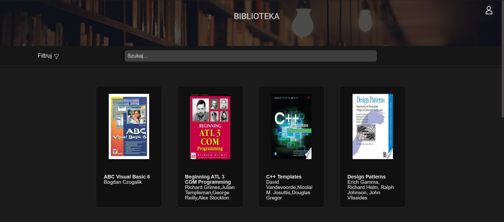

Intro
Hello, I am Janek, a passionate enthusiast of new technologies and programming. My fascination with programming began during high school where I discovered the extraordinary world of coding. The vision of participating in the development of technology and the world was my inspiration along with my personal determination to explore new possibilities.
My major passion is exploring the opportunities offered by technological advancements. I'm particularly interested in artificial intelligence and IT solutions that simplify, enhance, and enrich daily life. I also find the potential of augmented reality and virtual environments incredibly exciting as they reshape the ways we interact and engage with the digital world.😄
In the field of programming I particularly enjoy Python, but I'm also proficient in Java, C++ and also languages necessary for web development. My long-term career goals focus on advancing in Data Science and creating and training artificial intelligence.
As someone who enjoys solving logical problems and possesses an analytical mind I aim to continuously improve my programming skills.
Feel free to check out my profiles on LinkedIn and GitHub where you can find more information about me and my projects.
Work

My journey in tech began with an internship at EPLAN in Cieszyn, where I worked as part of a 4-person team on small-scale projects. My main focus was on developing a book rental web application, which introduced me to key phases of the software development lifecycle, from requirements gathering and design to testing and deployment. This experience provided me with foundational skills and showcased my ability to collaborate effectively within a team.
As an Embedded Systems Integration Engineer, I expanded my expertise to both hardware and software development. My tasks included configuring systems, writing configuration scripts, and working on embedded solutions that demanded precision and a deep understanding of system architecture. This role allowed me to develop a holistic view of embedded systems and solidify my technical skills across multiple domains.
Afterward, I took on the role of Python Automation Developer, where I gained experience in creating applications and automation scripts. My work in this position involved using Python, Python Selenium, and PyQt, allowing me to develop a strong understanding of automation processes, UI development, and data handling. This role deepened my knowledge of Python and honed my problem-solving skills.
Currently, I am working as a Software Engineer - Cloud Support, where I manage and maintain cloud infrastructure within the SAP Commerce Cloud environment. This role has strengthened my skills in cloud technology, system support, and troubleshooting, enabling me to deliver reliable and scalable solutions. I am responsible for maintaining system stability, responding to technical issues, and ensuring that the platform operates smoothly for users.
In addition to these major projects I have done several smaller projects which are available for preview on my GitHub profile. These projects encompass the range of technologies and demonstrate my versatility as a developer.
Furthermore, I have proactively pursued opportunities for continuous learning and growth, both through my university studies in informatics and through self-directed learning initiatives. I am committed to staying abreast of the latest developments in the field of technology and continuously improving my skills as a software developer.
About
I'm a passionate software developer with an interest in new technologies, AI, computers, and self-development. I graduated from the High School of Wladyslaw Szybinski in Cieszyn as a software developer. Now I'm a student at the Silesian University of Technology in Gliwice. Apart from my dedication to software development, I am also deeply passionate about cars, swimming, and saunas. 😄 These interests provide me with relaxation and inspiration outside of my coding endeavors. Additionally, I consider myself a sociable and extroverted individual, enjoying interactions and connections with others in both professional and social settings. I am also interested in project management, data science and cloud technologies.
Contact